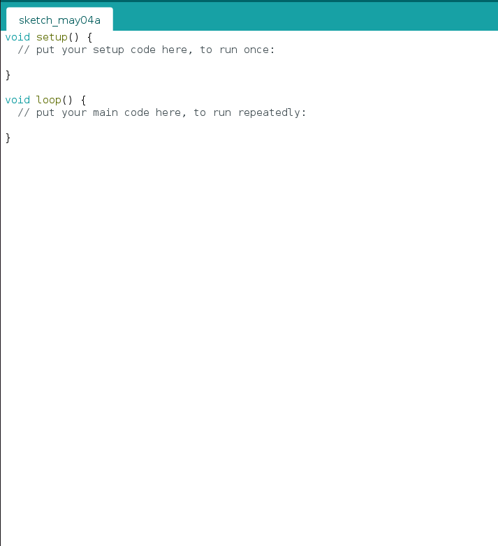

En primer lugar debemos investigar y saber de que se encarga cada componente del chasis del coche. Sin ese tipo de información es imposible llegar a realizar una buena programación.
Motores
Mente X es el nombre de nuestro proyecto y tendrá dos funciones:
-Se conectará por bluetooth a una aplicación del móvil y desde el nuestro telefono podremos manejarlo.
- El radar detectará los objetos que se encuentre en su camino.

Arduino IDE
Utilizaremos la aplicación de Arduino para llevar a cabo toda la programación tanto del coche como del radar.
El entorno de desarrollo integrado (IDE) de Arduino es una aplicación multiplataforma (para Windows, macOS, Linux ) que está escrita en el lenguaje de programación Java. Se utiliza para escribir y cargar programas en placas compatibles con Arduino
Placa arduino
Es el cerebro del proyecto, la placa la conectamos al ordenador y le introducimos el código para que envíe las órdenes a todos los componentes.
Atom
Atom es un editor de código fuente libre y de código abierto para macOS, Linux, y Microsoft Windows. Es una aplicación de escritorio basada en tecnologías web. Es el que estamos utilizando para realizar la página web.
Sensor HC-SR04
El HC-SR04 es un sensor ultrasónico que mide la distancia con ondas de ultrasonido. Utiliza el mismo principio que un sonar que envía una onda de sonido y mide el tiempo entre la transmisión y la recepción de su eco. Va conectado a la placa arduino y es el que vamos a utilizar para que detecte los objetos.